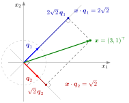

Let V be a real vector space with an inner product, written x⋅y (in Rn: the dot product). Vectors q1,…,qk∈V are orthonormal (form an orthonormal set) if they are pairwise orthogonal and each has norm1:
qi⋅qj={1,0,i=j,i=j.
An orthonormal basis of V is an orthonormal set that is also a basis of V.
An orthonormal basis is a coordinate system with perpendicular axes and unit length along each axis, like the standard basis e1,…,en of Rn but possibly rotated or reflected. Its advantage is that coordinates no longer require solving a system: the i-th coordinate of x is simply x⋅qi, the signed length of the orthogonal projection of x onto the line through qi.

The figure uses the first example below: q1=21(1,1)⊤ (blue) and q2=21(1,−1)⊤ (red) end on the unit circle and meet at a right angle. Dropping perpendiculars from x=(3,1)⊤ onto the two lines gives the feet 22q1=(2,2)⊤ and 2q2=(1,−1)⊤, so the coordinates are read off as the inner products x⋅q1=22 and x⋅q2=2, and the origin, the two feet and x are the corners of a rectangle. No system of equations is solved.
The two conditions do different jobs. Orthogonality alone gives an orthogonal set, whose coordinates are (x⋅vi)/(vi⋅vi); dividing each vi by ∥vi∥ (normalizing) removes the denominators. Unit length alone is not enough: (1,0)⊤ and 21(1,1)⊤ are unit vectors but not orthogonal.
In matrix form, put q1,…,qk∈Rn as the columns of an n×kmatrixQ. The (i,j) entry of Q⊤Q is qi⋅qj, so the columns are orthonormal exactly when Q⊤Q=Ik. When k=n,Q is an orthogonal matrix and is the transformation matrix of the basis in the sense of change of basis; its inverse is simply Q⊤.
An orthonormal set is linearly independent: taking the inner product of i∑ciqi=0 with qj gives cj=0. The same argument works for any orthogonal set of nonzero vectors. Hence an orthonormal set in an n-dimensional space has at most n vectors, and n orthonormal vectors form an orthonormal basis.
Expansion: if q1,…,qn is an orthonormal basis of V, every x∈V satisfies x=i=1∑n(x⋅qi)qi; in Rn the coordinate vector is y=Q⊤x.
Lengths and inner products can be computed in coordinates: x⋅z=i∑(x⋅qi)(z⋅qi) and ∥x∥2=i∑(x⋅qi)2 (Parseval's identity). With respect to a basis that is not orthonormal, neither formula holds.
Existence: every finite-dimensional inner product space has an orthonormal basis, and every orthonormal set extends to one; the Gram-Schmidt algorithm constructs it from any basis.
If q1,…,qk is an orthonormal basis of a subspaceW of Rn, then projWx=i=1∑k(x⋅qi)qi=QQ⊤x; for k<n,QQ⊤=In even though Q⊤Q=Ik.
If q1,…,qk is extended to an orthonormal basis q1,…,qn of Rn, the added vectors qk+1,…,qn form an orthonormal basis of the orthogonal complementW⊥, so dimW+dimW⊥=n.
Coordinates without inverting. In R2,q1=21(1,1)⊤ and q2=21(1,−1)⊤ are orthonormal: q1⋅q2=21(1−1)=0 and q1⋅q1=q2⋅q2=1. For x=(3,1)⊤,
x⋅q1x⋅q2=24=22,=22=2,
and indeed 22q1+2q2=(2,2)⊤+(1,−1)⊤=(3,1)⊤. The length check gives (22)2+(2)2=10=32+12.
Normalizing an orthogonal set. In R3 the vectors (1,1,0)⊤,(1,−1,0)⊤,(0,0,2)⊤ are pairwise orthogonal with norms 2,2,2. Dividing by the norms gives the orthonormal basis
Projecting with an orthonormal basis. For W=span{q1,q2} from the previous example (the planex3=0) and b=(2,0,5)⊤:b⋅q1=2 and b⋅q2=2, so projWb=(1,1,0)⊤+(1,−1,0)⊤=(2,0,0)⊤, as expected for the plane x3=0.
A tilted plane and its complement. The vectors q1=31(1,2,2)⊤ and q2=31(2,1,−2)⊤ are orthonormal: q1⋅q2=91(2+2−4)=0 and both have squared length 91(1+4+4)=1. They span a plane W through the origin. With Q=[q1q2],Q⊤Q=I2, but
QQ⊤=9154−2452−228=I3.
For x=(0,0,9)⊤ the coordinates are x⋅q1=6 and x⋅q2=−6, so projWx=6q1−6q2=(−2,2,8)⊤. The remainder (2,−2,1)⊤ is orthogonal to both qi, and normalizing it gives q3=31(2,−2,1)⊤, which completes an orthonormal basis of R3 and spans W⊥.